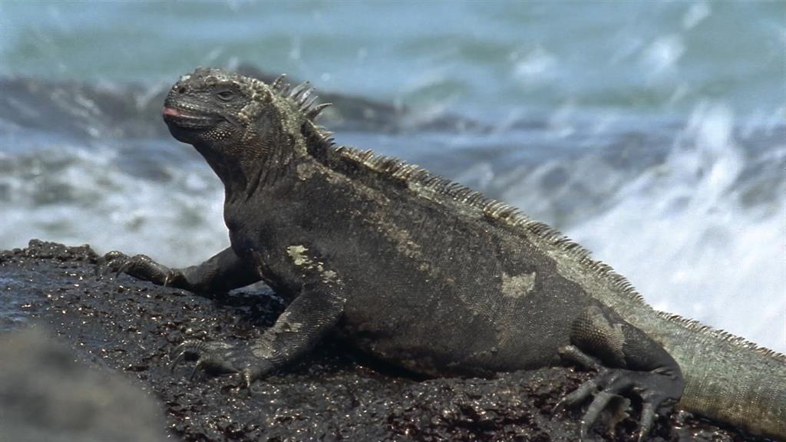
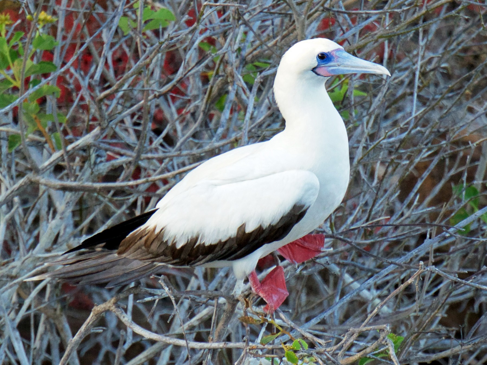

นกฟินช์

ปูหินสีแดง หรือ ปูกราปซัส (อังกฤษ: red rock crab, abuete negro; ชื่อวิทยาศาสตร์: Grapsus grapsus) เป็นปูชนิดหนึ่งที่อยู่ในวงศ์สัตว์ไม่มีกระดูกสันหลังหรือสัตว์ขาปล้อง (Arthropoda) เป็นปูที่มีสีสันสะดุดตาโทนสีส้มไล่สีไปยังน้ำตาลจนถึงสีดำ บางตัวก็มีโทนสีเหลือง ขาว และ น้ำเงิน หรือบางตัวอาจจะมีทั้งสามสีรวมกันเลยก็ได้ ปูหินสีแดงเหล่านี้มีลำตัวยาวประมาณ 3-5 นิ้ว(8-12 เซนติเมตร) น้ำหนักประมาณครึ่งปอนด์ (0.45 กิโลกรัม) ปูหินสีแดงในวัยเด็กจะมีลำตัวเป็นสีดำหรือสีน้ำตาลเข้มเพื่อที่จะสามารถซ่อนตัวตามหินลาวาสีดำเพื่อหลบหลีกจากผู้ล่า แต่เมื่อมันเข้าถึงช่วงตัวเต็มวัยสีของมันจะหายไปกลายเป็นสีสดใส เพราะมันไม่จำเป็นต้องหลบจากผู้ล่า เนื่องจากมันมีความไวมากมันจึงเก่งพอทีจะ วิ่งหนีผู้ล่าได้เกือบแทบทุกชนิด ด้วยความสามารถในการวิ่ง การกระโดด หรือแม้แต่การกระโจนตระครุบก็ยังทำได้จึงเป็นไปไม่ได้เลยที่จะจับมันบนบก เจ้าปูหินสีแดงนี้ยังสามารถวิ่งได้ทั้งถึงสี่ทิศรอบตัว ชีวิตประจำวันของพวกมันคือ พวกมันเป็นนักเก็บซากแห่งเกาะกาลาปากอสโดยพวกมันจะคอยกินเศษอาหาร,สาหร่าย,หรือสัตว์ที่ตายแล้ว ทำให้มันเป็นส่วนหนึ่งของระบบนิเวศที่คอยทำให้ชายฝั่งสะอาดอยู่เสมอ ส่วนมากพวกมันจะชอบขึ้นมายืนอาบแดดอยู่บนหินตามชายฝั่งโดดไปมาระหว่างหิน ชาวประมงเล่าว่าปูหินสีแดงนี้กินแทบจะไม่ได้เลยเพราะเนื้อมันน้อยส่วนมากจึงถูกจับนำมาเป็นเหยื่อล่าปลาไหลมอเรล
ชนิดของสัตว์ในเกาะกาลาปากอส

Finch Dawin
นกตัวที่ 1

Grapsus Crapsus
ปูตัวที่ 1

Marine Iguana
อิกัวน่าตัวที่ 1

Galápagos Penguin
เพนกวินตัวที่ 1

Galápagos Tortoise
เต่าตัวที่ 1

Bluebooby
นกตัวที่ 2

Magnificent Frigatebird
นกตัวที่ 3

Red-Footed Booby
นกตัวที่ 4

Flightless Cormorant
นกตัวที่ 5

Galápagos Sea Lion
แมวน้ำตัวที่ 1